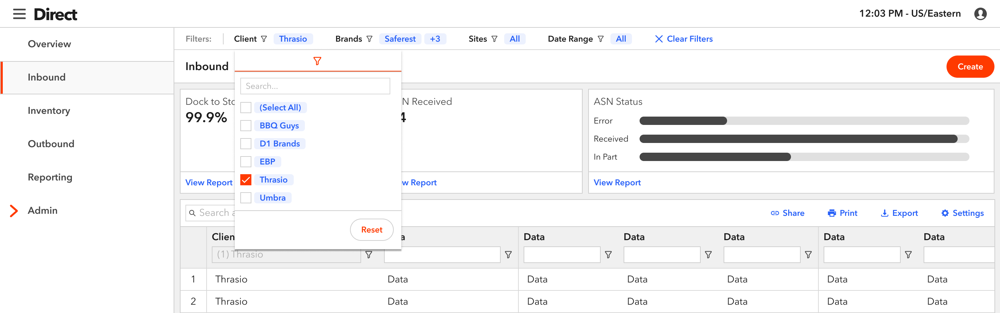
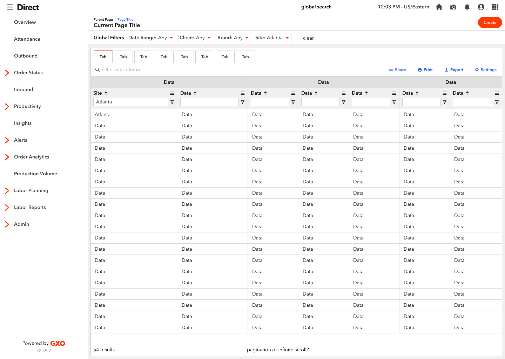
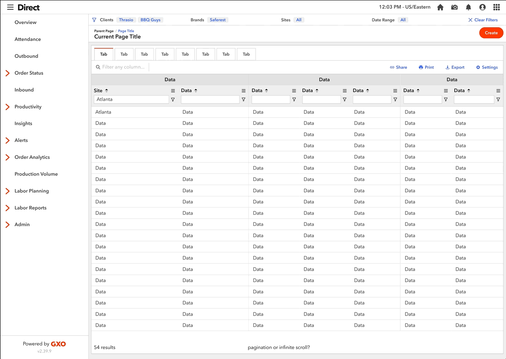
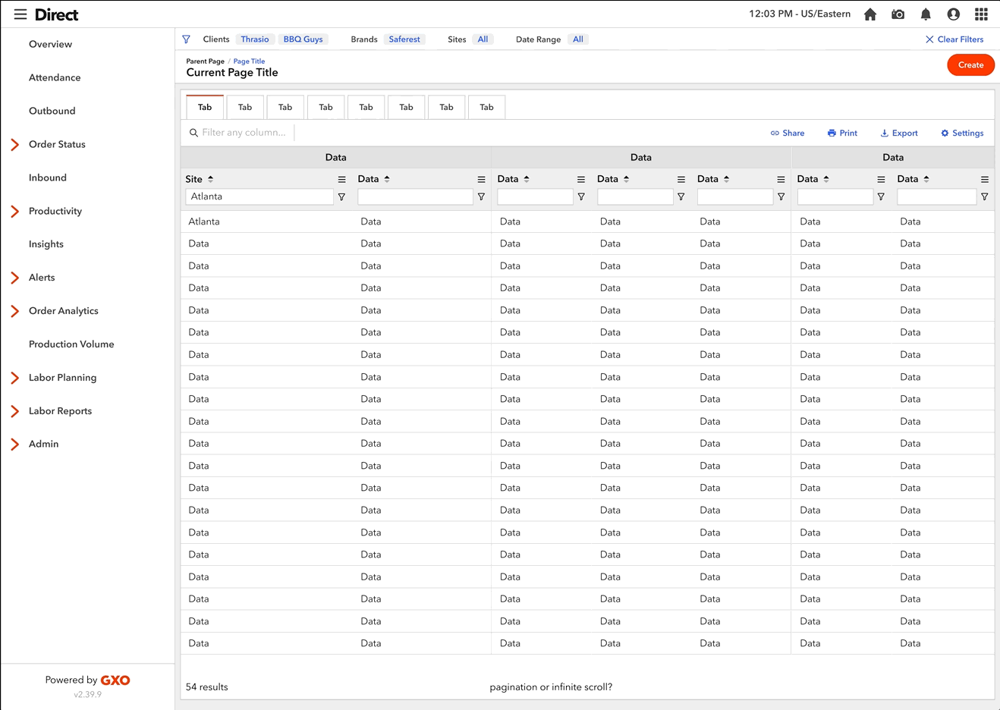
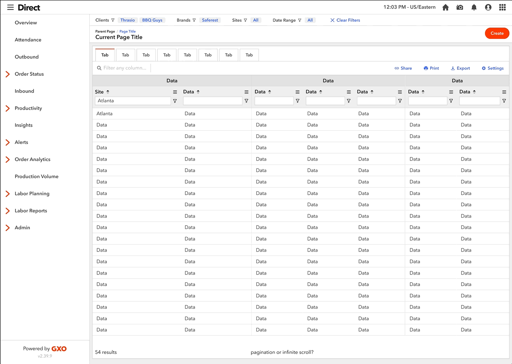

Case Study
Global Filter Bar

TL;DR
At the request of users and stakeholders, I designed a persistent filter bar that allows users of GXO’s eFulfillment web app, Direct, to filter the entire application by client-specific information. I created this feature to give our primary and secondary personas a view of their KPIs, inventory, and orders at a warehouse and brand level that they’ve never had before.
View PrototypeResponsiblities
- User research
- Creating requirements
- High fidelity design and prototyping
Background
The GXO eFulfillment network has warehouses across the country. In addition, our clients rent out a portion of multiple GXO warehouses (aka "sites") to create their own fulfillment network to expedite deliveries to their customers. The sites are all run by GXO employees, who pick, pack, ship, and replenish our client's goods.
Examples of sites in the network:
During our persona workshop, we identified clients as our primary persona and GXO employees (specifically Client Service Managers) as our secondary persona. This feature will be used by GXO employees who are located at our corporate offices, not employees who are located at our sites.
Clients
Each of our clients has a unique business and needs, and with that comes certain needs. For example, some of our clients have multiple brands within their company and want the ability to delve deep into a specific brand or site, or alternatively, have a holistic view of them all. Other clients have one brand, and want to be able to look at a specific site. This diagram shows the different types of ways to our clients are looking to split information.

GXO Employees (CSMs)
The GXO Client Service Managers (CSMs) are similar to Account Managers and are responsible for managing several clients. They are often the communicators between our clients and Operations team at our sites. CSMs also focus on overall health at our sites so they can anticipate and notify everyone of delays. They require a birds eye view of the eFulfillment business as a whole.

Research
Our clients and CSMs called out how challenging the filters in the "Prompts" section were to use during our user interviews. Not only did they reset on each page, but each page had a different set of filters. In addition, on some pages, the filters only affected the grid and not the other widgets of information, which was very confusing for the user.
"I don't think I can filter in the portal, to be honest with you. It's just, it's, it's a tough user experience. So like, it's just, it's not feasible to do that within the portal. You have to kind of bring the data outside of it so that you can use better tools."

Goal
The goal of the Global Filter Bar component is to give our users the ability to view the business in any manner that they see fit - whether it's a holistic view or a deep dive into a specific area. The filters are not persistent on each page in the old app, making them a huge pain point for our users. Once Global Filters are applied, these filters will be persistent on every page where filters are respected. Most pages will respect filters, although there are a few where they will not take effect. In this case, there needs to be a visual distinction on pages where filters are not applicable. The filters will affect all information on the page, including grids and widgets.
Design Iteration
Initially, design and dev leadership asked for the design to use existing components from our design system to build this Global Filter Bar to reduce time and cost. I put together a few sketches, then jumped into Figma. The stakeholders were hoping for a design that would be flexible enough for both clients and CSMs. My process began with designing the most challenging use case to solve for (CSMs) and working backward from there.
Sketches
Insert drawing
First Iteration
I brought three options within scope to the UX team to get feedback. Everyone felt v3 was the strongest, but they challenged me to explore outside of our component library and to make it shorter in height.

Second Iteration
For this project, our dev team is using AG Grid, a Javascript grid library with a lot of built-in functionality, such as filtering, column pinning, etc. As I was designing outside of our component library, I thought it would be best to make the filtering experience as consistent as possible between the grid and Global Filter Bar, as the two would function together. So, I began experimenting with adding the filter icon next to each filter title to bring more awareness that the two filters are linked.



Edge Cases
I took it a step further to remove the expanding altogether and align it with the grid filters.
As I was iterating on this concept, one of the challenges I discovered in this design is that a user could select more filters than the bar could accommodate, width-wise (see screenshot). In previous iterations, where I had dropdowns, I had planned to truncate what was shown in the dropdown. So I came up with a few concepts that would resolve this edge case and worked with the UX team to narrow it down to one solution.
Final Design
Check out the embedded prototype below, or click here to open the prototype in your browser. There are 5 different flows along with descriptions in the left hand panel.
Summary
In conclusion, the Global Filter Bar will allow better usability and more insight into how our clients run their business and how our CSMs assist. Our next step in this process is to do a hierarchical task analysis to optimize the solution and ensure that we have solved our users’ needs. Due to time constraints, our development team is going straight into code, and we will assess with users in a QA environment.